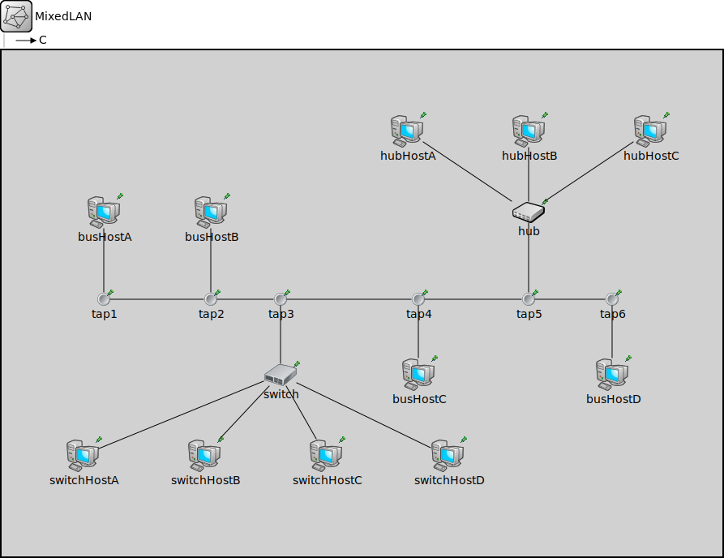

Package: inet.examples.ethernet.lans
MixedLAN
networkSample Ethernet LAN containing eight hosts, a switch and a bus.
Usage diagram
The following diagram shows usage relationships between types. Unresolved types are missing from the diagram.
Properties
| Name | Value | Description |
|---|---|---|
| isNetwork |
Unassigned submodule parameters
| Name | Type | Default value | Description |
|---|---|---|---|
| busHostA.status.initialStatus | string | "UP" |
TODO @signal, @statistic |
| busHostA.interfaceTable.displayAddresses | bool | false |
whether to display IP addresses on links |
| busHostA.cli.interfaceTableModule | string | ||
| busHostA.cli.destAddress | string | "" |
destination MAC address, or module path name of destination station; empty means off |
| busHostA.cli.startTime | double | this.sendInterval |
time of sending the first request |
| busHostA.cli.stopTime | double | -1s |
time of finishing sending, negative values mean forever |
| busHostA.cli.localSAP | int | 0xf0 |
local service access point |
| busHostA.cli.remoteSAP | int | 0xf1 |
remote service access point |
| busHostA.cli.sendInterval | double | uniform(0s,1s) |
interval between sending requests |
| busHostA.cli.reqLength | int | 100B |
length of request packets |
| busHostA.cli.respLength | int | 1KiB |
length of response packets |
| busHostA.cli.stopOperationExtraTime | double | -1s |
extra time after lifecycle stop operation finished |
| busHostA.cli.stopOperationTimeout | double | 2s |
timeout value for lifecycle stop operation |
| busHostA.srv.localSAP | int | 0xf1 | |
| busHostA.srv.stopOperationExtraTime | double | -1s |
extra time after lifecycle stop operation finished |
| busHostA.srv.stopOperationTimeout | double | 2s |
timeout value for lifecycle stop operation |
| busHostA.dp.displayStringTextFormat | string | "processed %p pk (%l)" |
determines the text that is written on top of the submodule |
| busHostA.dp.forwardServiceRegistration | bool | true | |
| busHostA.dp.forwardProtocolRegistration | bool | true | |
| busHostA.li.displayStringTextFormat | string | "processed %p pk (%l)" |
determines the text that is written on top of the submodule |
| busHostA.li.forwardServiceRegistration | bool | true | |
| busHostA.li.forwardProtocolRegistration | bool | true | |
| busHostA.eth.bitrate | double | ||
| busHostB.status.initialStatus | string | "UP" |
TODO @signal, @statistic |
| busHostB.interfaceTable.displayAddresses | bool | false |
whether to display IP addresses on links |
| busHostB.cli.interfaceTableModule | string | ||
| busHostB.cli.destAddress | string | "" |
destination MAC address, or module path name of destination station; empty means off |
| busHostB.cli.startTime | double | this.sendInterval |
time of sending the first request |
| busHostB.cli.stopTime | double | -1s |
time of finishing sending, negative values mean forever |
| busHostB.cli.localSAP | int | 0xf0 |
local service access point |
| busHostB.cli.remoteSAP | int | 0xf1 |
remote service access point |
| busHostB.cli.sendInterval | double | uniform(0s,1s) |
interval between sending requests |
| busHostB.cli.reqLength | int | 100B |
length of request packets |
| busHostB.cli.respLength | int | 1KiB |
length of response packets |
| busHostB.cli.stopOperationExtraTime | double | -1s |
extra time after lifecycle stop operation finished |
| busHostB.cli.stopOperationTimeout | double | 2s |
timeout value for lifecycle stop operation |
| busHostB.srv.localSAP | int | 0xf1 | |
| busHostB.srv.stopOperationExtraTime | double | -1s |
extra time after lifecycle stop operation finished |
| busHostB.srv.stopOperationTimeout | double | 2s |
timeout value for lifecycle stop operation |
| busHostB.dp.displayStringTextFormat | string | "processed %p pk (%l)" |
determines the text that is written on top of the submodule |
| busHostB.dp.forwardServiceRegistration | bool | true | |
| busHostB.dp.forwardProtocolRegistration | bool | true | |
| busHostB.li.displayStringTextFormat | string | "processed %p pk (%l)" |
determines the text that is written on top of the submodule |
| busHostB.li.forwardServiceRegistration | bool | true | |
| busHostB.li.forwardProtocolRegistration | bool | true | |
| busHostB.eth.bitrate | double | ||
| busHostC.status.initialStatus | string | "UP" |
TODO @signal, @statistic |
| busHostC.interfaceTable.displayAddresses | bool | false |
whether to display IP addresses on links |
| busHostC.cli.interfaceTableModule | string | ||
| busHostC.cli.destAddress | string | "" |
destination MAC address, or module path name of destination station; empty means off |
| busHostC.cli.startTime | double | this.sendInterval |
time of sending the first request |
| busHostC.cli.stopTime | double | -1s |
time of finishing sending, negative values mean forever |
| busHostC.cli.localSAP | int | 0xf0 |
local service access point |
| busHostC.cli.remoteSAP | int | 0xf1 |
remote service access point |
| busHostC.cli.sendInterval | double | uniform(0s,1s) |
interval between sending requests |
| busHostC.cli.reqLength | int | 100B |
length of request packets |
| busHostC.cli.respLength | int | 1KiB |
length of response packets |
| busHostC.cli.stopOperationExtraTime | double | -1s |
extra time after lifecycle stop operation finished |
| busHostC.cli.stopOperationTimeout | double | 2s |
timeout value for lifecycle stop operation |
| busHostC.srv.localSAP | int | 0xf1 | |
| busHostC.srv.stopOperationExtraTime | double | -1s |
extra time after lifecycle stop operation finished |
| busHostC.srv.stopOperationTimeout | double | 2s |
timeout value for lifecycle stop operation |
| busHostC.dp.displayStringTextFormat | string | "processed %p pk (%l)" |
determines the text that is written on top of the submodule |
| busHostC.dp.forwardServiceRegistration | bool | true | |
| busHostC.dp.forwardProtocolRegistration | bool | true | |
| busHostC.li.displayStringTextFormat | string | "processed %p pk (%l)" |
determines the text that is written on top of the submodule |
| busHostC.li.forwardServiceRegistration | bool | true | |
| busHostC.li.forwardProtocolRegistration | bool | true | |
| busHostC.eth.bitrate | double | ||
| busHostD.status.initialStatus | string | "UP" |
TODO @signal, @statistic |
| busHostD.interfaceTable.displayAddresses | bool | false |
whether to display IP addresses on links |
| busHostD.cli.interfaceTableModule | string | ||
| busHostD.cli.destAddress | string | "" |
destination MAC address, or module path name of destination station; empty means off |
| busHostD.cli.startTime | double | this.sendInterval |
time of sending the first request |
| busHostD.cli.stopTime | double | -1s |
time of finishing sending, negative values mean forever |
| busHostD.cli.localSAP | int | 0xf0 |
local service access point |
| busHostD.cli.remoteSAP | int | 0xf1 |
remote service access point |
| busHostD.cli.sendInterval | double | uniform(0s,1s) |
interval between sending requests |
| busHostD.cli.reqLength | int | 100B |
length of request packets |
| busHostD.cli.respLength | int | 1KiB |
length of response packets |
| busHostD.cli.stopOperationExtraTime | double | -1s |
extra time after lifecycle stop operation finished |
| busHostD.cli.stopOperationTimeout | double | 2s |
timeout value for lifecycle stop operation |
| busHostD.srv.localSAP | int | 0xf1 | |
| busHostD.srv.stopOperationExtraTime | double | -1s |
extra time after lifecycle stop operation finished |
| busHostD.srv.stopOperationTimeout | double | 2s |
timeout value for lifecycle stop operation |
| busHostD.dp.displayStringTextFormat | string | "processed %p pk (%l)" |
determines the text that is written on top of the submodule |
| busHostD.dp.forwardServiceRegistration | bool | true | |
| busHostD.dp.forwardProtocolRegistration | bool | true | |
| busHostD.li.displayStringTextFormat | string | "processed %p pk (%l)" |
determines the text that is written on top of the submodule |
| busHostD.li.forwardServiceRegistration | bool | true | |
| busHostD.li.forwardProtocolRegistration | bool | true | |
| busHostD.eth.bitrate | double | ||
| switchHostA.status.initialStatus | string | "UP" |
TODO @signal, @statistic |
| switchHostA.interfaceTable.displayAddresses | bool | false |
whether to display IP addresses on links |
| switchHostA.cli.interfaceTableModule | string | ||
| switchHostA.cli.destAddress | string | "" |
destination MAC address, or module path name of destination station; empty means off |
| switchHostA.cli.startTime | double | this.sendInterval |
time of sending the first request |
| switchHostA.cli.stopTime | double | -1s |
time of finishing sending, negative values mean forever |
| switchHostA.cli.localSAP | int | 0xf0 |
local service access point |
| switchHostA.cli.remoteSAP | int | 0xf1 |
remote service access point |
| switchHostA.cli.sendInterval | double | uniform(0s,1s) |
interval between sending requests |
| switchHostA.cli.reqLength | int | 100B |
length of request packets |
| switchHostA.cli.respLength | int | 1KiB |
length of response packets |
| switchHostA.cli.stopOperationExtraTime | double | -1s |
extra time after lifecycle stop operation finished |
| switchHostA.cli.stopOperationTimeout | double | 2s |
timeout value for lifecycle stop operation |
| switchHostA.srv.localSAP | int | 0xf1 | |
| switchHostA.srv.stopOperationExtraTime | double | -1s |
extra time after lifecycle stop operation finished |
| switchHostA.srv.stopOperationTimeout | double | 2s |
timeout value for lifecycle stop operation |
| switchHostA.dp.displayStringTextFormat | string | "processed %p pk (%l)" |
determines the text that is written on top of the submodule |
| switchHostA.dp.forwardServiceRegistration | bool | true | |
| switchHostA.dp.forwardProtocolRegistration | bool | true | |
| switchHostA.li.displayStringTextFormat | string | "processed %p pk (%l)" |
determines the text that is written on top of the submodule |
| switchHostA.li.forwardServiceRegistration | bool | true | |
| switchHostA.li.forwardProtocolRegistration | bool | true | |
| switchHostA.eth.bitrate | double | ||
| switchHostB.status.initialStatus | string | "UP" |
TODO @signal, @statistic |
| switchHostB.interfaceTable.displayAddresses | bool | false |
whether to display IP addresses on links |
| switchHostB.cli.interfaceTableModule | string | ||
| switchHostB.cli.destAddress | string | "" |
destination MAC address, or module path name of destination station; empty means off |
| switchHostB.cli.startTime | double | this.sendInterval |
time of sending the first request |
| switchHostB.cli.stopTime | double | -1s |
time of finishing sending, negative values mean forever |
| switchHostB.cli.localSAP | int | 0xf0 |
local service access point |
| switchHostB.cli.remoteSAP | int | 0xf1 |
remote service access point |
| switchHostB.cli.sendInterval | double | uniform(0s,1s) |
interval between sending requests |
| switchHostB.cli.reqLength | int | 100B |
length of request packets |
| switchHostB.cli.respLength | int | 1KiB |
length of response packets |
| switchHostB.cli.stopOperationExtraTime | double | -1s |
extra time after lifecycle stop operation finished |
| switchHostB.cli.stopOperationTimeout | double | 2s |
timeout value for lifecycle stop operation |
| switchHostB.srv.localSAP | int | 0xf1 | |
| switchHostB.srv.stopOperationExtraTime | double | -1s |
extra time after lifecycle stop operation finished |
| switchHostB.srv.stopOperationTimeout | double | 2s |
timeout value for lifecycle stop operation |
| switchHostB.dp.displayStringTextFormat | string | "processed %p pk (%l)" |
determines the text that is written on top of the submodule |
| switchHostB.dp.forwardServiceRegistration | bool | true | |
| switchHostB.dp.forwardProtocolRegistration | bool | true | |
| switchHostB.li.displayStringTextFormat | string | "processed %p pk (%l)" |
determines the text that is written on top of the submodule |
| switchHostB.li.forwardServiceRegistration | bool | true | |
| switchHostB.li.forwardProtocolRegistration | bool | true | |
| switchHostB.eth.bitrate | double | ||
| switchHostC.status.initialStatus | string | "UP" |
TODO @signal, @statistic |
| switchHostC.interfaceTable.displayAddresses | bool | false |
whether to display IP addresses on links |
| switchHostC.cli.interfaceTableModule | string | ||
| switchHostC.cli.destAddress | string | "" |
destination MAC address, or module path name of destination station; empty means off |
| switchHostC.cli.startTime | double | this.sendInterval |
time of sending the first request |
| switchHostC.cli.stopTime | double | -1s |
time of finishing sending, negative values mean forever |
| switchHostC.cli.localSAP | int | 0xf0 |
local service access point |
| switchHostC.cli.remoteSAP | int | 0xf1 |
remote service access point |
| switchHostC.cli.sendInterval | double | uniform(0s,1s) |
interval between sending requests |
| switchHostC.cli.reqLength | int | 100B |
length of request packets |
| switchHostC.cli.respLength | int | 1KiB |
length of response packets |
| switchHostC.cli.stopOperationExtraTime | double | -1s |
extra time after lifecycle stop operation finished |
| switchHostC.cli.stopOperationTimeout | double | 2s |
timeout value for lifecycle stop operation |
| switchHostC.srv.localSAP | int | 0xf1 | |
| switchHostC.srv.stopOperationExtraTime | double | -1s |
extra time after lifecycle stop operation finished |
| switchHostC.srv.stopOperationTimeout | double | 2s |
timeout value for lifecycle stop operation |
| switchHostC.dp.displayStringTextFormat | string | "processed %p pk (%l)" |
determines the text that is written on top of the submodule |
| switchHostC.dp.forwardServiceRegistration | bool | true | |
| switchHostC.dp.forwardProtocolRegistration | bool | true | |
| switchHostC.li.displayStringTextFormat | string | "processed %p pk (%l)" |
determines the text that is written on top of the submodule |
| switchHostC.li.forwardServiceRegistration | bool | true | |
| switchHostC.li.forwardProtocolRegistration | bool | true | |
| switchHostC.eth.bitrate | double | ||
| switchHostD.status.initialStatus | string | "UP" |
TODO @signal, @statistic |
| switchHostD.interfaceTable.displayAddresses | bool | false |
whether to display IP addresses on links |
| switchHostD.cli.interfaceTableModule | string | ||
| switchHostD.cli.destAddress | string | "" |
destination MAC address, or module path name of destination station; empty means off |
| switchHostD.cli.startTime | double | this.sendInterval |
time of sending the first request |
| switchHostD.cli.stopTime | double | -1s |
time of finishing sending, negative values mean forever |
| switchHostD.cli.localSAP | int | 0xf0 |
local service access point |
| switchHostD.cli.remoteSAP | int | 0xf1 |
remote service access point |
| switchHostD.cli.sendInterval | double | uniform(0s,1s) |
interval between sending requests |
| switchHostD.cli.reqLength | int | 100B |
length of request packets |
| switchHostD.cli.respLength | int | 1KiB |
length of response packets |
| switchHostD.cli.stopOperationExtraTime | double | -1s |
extra time after lifecycle stop operation finished |
| switchHostD.cli.stopOperationTimeout | double | 2s |
timeout value for lifecycle stop operation |
| switchHostD.srv.localSAP | int | 0xf1 | |
| switchHostD.srv.stopOperationExtraTime | double | -1s |
extra time after lifecycle stop operation finished |
| switchHostD.srv.stopOperationTimeout | double | 2s |
timeout value for lifecycle stop operation |
| switchHostD.dp.displayStringTextFormat | string | "processed %p pk (%l)" |
determines the text that is written on top of the submodule |
| switchHostD.dp.forwardServiceRegistration | bool | true | |
| switchHostD.dp.forwardProtocolRegistration | bool | true | |
| switchHostD.li.displayStringTextFormat | string | "processed %p pk (%l)" |
determines the text that is written on top of the submodule |
| switchHostD.li.forwardServiceRegistration | bool | true | |
| switchHostD.li.forwardProtocolRegistration | bool | true | |
| switchHostD.eth.bitrate | double | ||
| switch.macTable.agingTime | double | ||
| switch.macTable.forwardingTableFile | string | ||
| switch.interfaceTable.displayAddresses | bool | false |
whether to display IP addresses on links |
| switch.l2NodeConfigurator.interfaceTableModule | string | ||
| switch.l2NodeConfigurator.l2ConfiguratorModule | string | "l2NetworkConfigurator" |
the absolute path to the ~L2NetworkConfigurator; use "" if there is no configurator |
| switch.status.initialStatus | string | "UP" |
TODO @signal, @statistic |
| switch.pcapRecorder.verbose | bool | true |
whether to log packets on the module output |
| switch.pcapRecorder.pcapFile | string | "" |
the PCAP file to be written |
| switch.pcapRecorder.fileFormat | string | "pcapng" | |
| switch.pcapRecorder.snaplen | int | 65535 |
maximum number of bytes to record per packet |
| switch.pcapRecorder.dumpBadFrames | bool | true |
enable dump of frames with hasBitError |
| switch.pcapRecorder.moduleNamePatterns | string | "wlan[*] eth[*] ppp[*]" |
space-separated list of sibling module names to listen on |
| switch.pcapRecorder.sendingSignalNames | string | "packetSentToLower" |
space-separated list of outbound packet signals to subscribe to |
| switch.pcapRecorder.receivingSignalNames | string | "packetReceivedFromLower" |
space-separated list of inbound packet signals to subscribe to |
| switch.pcapRecorder.dumpProtocols | string | "ethernetmac ppp ieee80211mac" |
space-separated list of protocol names as defined in the Protocol class |
| switch.pcapRecorder.packetFilter | object | "*" |
which packets are considered, matches all packets by default |
| switch.pcapRecorder.helpers | string | "" |
usable PcapRecorder::IHelper helpers for accept packettype and store/convert packet as specified linktype currently available: "inet::AckingMacToEthernetPcapRecorderHelper" |
| switch.pcapRecorder.alwaysFlush | bool | false |
flush the pcapFile after each write to ensure that all packets are captured in case of a crash |
| switch.pcapRecorder.displayStringTextFormat | string | "rec: %n pks" | |
| switch.stp.helloTime | double | ||
| switch.stp.forwardDelay | double | ||
| switch.stp.maxAge | double | ||
| switch.stp.bridgePriority | int | ||
| switch.stp.visualize | bool | ||
| switch.sc.displayStringTextFormat | string | "processed %p pk (%l)" |
determines the text that is written on top of the submodule |
| switch.sc.forwardServiceRegistration | bool | true | |
| switch.sc.forwardProtocolRegistration | bool | true | |
| switch.cb.displayStringTextFormat | string | "processed %p pk (%l)" |
determines the text that is written on top of the submodule |
| switch.cb.forwardServiceRegistration | bool | true | |
| switch.cb.forwardProtocolRegistration | bool | true | |
| switch.bl.displayStringTextFormat | string | "processed %p pk (%l)" |
determines the text that is written on top of the submodule |
| switch.bl.forwardServiceRegistration | bool | true | |
| switch.bl.forwardProtocolRegistration | bool | true | |
| switch.li.displayStringTextFormat | string | "processed %p pk (%l)" |
determines the text that is written on top of the submodule |
| switch.li.forwardServiceRegistration | bool | true | |
| switch.li.forwardProtocolRegistration | bool | true | |
| switch.eth.bitrate | double | ||
| hubHostA.status.initialStatus | string | "UP" |
TODO @signal, @statistic |
| hubHostA.interfaceTable.displayAddresses | bool | false |
whether to display IP addresses on links |
| hubHostA.cli.interfaceTableModule | string | ||
| hubHostA.cli.destAddress | string | "" |
destination MAC address, or module path name of destination station; empty means off |
| hubHostA.cli.startTime | double | this.sendInterval |
time of sending the first request |
| hubHostA.cli.stopTime | double | -1s |
time of finishing sending, negative values mean forever |
| hubHostA.cli.localSAP | int | 0xf0 |
local service access point |
| hubHostA.cli.remoteSAP | int | 0xf1 |
remote service access point |
| hubHostA.cli.sendInterval | double | uniform(0s,1s) |
interval between sending requests |
| hubHostA.cli.reqLength | int | 100B |
length of request packets |
| hubHostA.cli.respLength | int | 1KiB |
length of response packets |
| hubHostA.cli.stopOperationExtraTime | double | -1s |
extra time after lifecycle stop operation finished |
| hubHostA.cli.stopOperationTimeout | double | 2s |
timeout value for lifecycle stop operation |
| hubHostA.srv.localSAP | int | 0xf1 | |
| hubHostA.srv.stopOperationExtraTime | double | -1s |
extra time after lifecycle stop operation finished |
| hubHostA.srv.stopOperationTimeout | double | 2s |
timeout value for lifecycle stop operation |
| hubHostA.dp.displayStringTextFormat | string | "processed %p pk (%l)" |
determines the text that is written on top of the submodule |
| hubHostA.dp.forwardServiceRegistration | bool | true | |
| hubHostA.dp.forwardProtocolRegistration | bool | true | |
| hubHostA.li.displayStringTextFormat | string | "processed %p pk (%l)" |
determines the text that is written on top of the submodule |
| hubHostA.li.forwardServiceRegistration | bool | true | |
| hubHostA.li.forwardProtocolRegistration | bool | true | |
| hubHostA.eth.bitrate | double | ||
| hubHostB.status.initialStatus | string | "UP" |
TODO @signal, @statistic |
| hubHostB.interfaceTable.displayAddresses | bool | false |
whether to display IP addresses on links |
| hubHostB.cli.interfaceTableModule | string | ||
| hubHostB.cli.destAddress | string | "" |
destination MAC address, or module path name of destination station; empty means off |
| hubHostB.cli.startTime | double | this.sendInterval |
time of sending the first request |
| hubHostB.cli.stopTime | double | -1s |
time of finishing sending, negative values mean forever |
| hubHostB.cli.localSAP | int | 0xf0 |
local service access point |
| hubHostB.cli.remoteSAP | int | 0xf1 |
remote service access point |
| hubHostB.cli.sendInterval | double | uniform(0s,1s) |
interval between sending requests |
| hubHostB.cli.reqLength | int | 100B |
length of request packets |
| hubHostB.cli.respLength | int | 1KiB |
length of response packets |
| hubHostB.cli.stopOperationExtraTime | double | -1s |
extra time after lifecycle stop operation finished |
| hubHostB.cli.stopOperationTimeout | double | 2s |
timeout value for lifecycle stop operation |
| hubHostB.srv.localSAP | int | 0xf1 | |
| hubHostB.srv.stopOperationExtraTime | double | -1s |
extra time after lifecycle stop operation finished |
| hubHostB.srv.stopOperationTimeout | double | 2s |
timeout value for lifecycle stop operation |
| hubHostB.dp.displayStringTextFormat | string | "processed %p pk (%l)" |
determines the text that is written on top of the submodule |
| hubHostB.dp.forwardServiceRegistration | bool | true | |
| hubHostB.dp.forwardProtocolRegistration | bool | true | |
| hubHostB.li.displayStringTextFormat | string | "processed %p pk (%l)" |
determines the text that is written on top of the submodule |
| hubHostB.li.forwardServiceRegistration | bool | true | |
| hubHostB.li.forwardProtocolRegistration | bool | true | |
| hubHostB.eth.bitrate | double | ||
| hubHostC.status.initialStatus | string | "UP" |
TODO @signal, @statistic |
| hubHostC.interfaceTable.displayAddresses | bool | false |
whether to display IP addresses on links |
| hubHostC.cli.interfaceTableModule | string | ||
| hubHostC.cli.destAddress | string | "" |
destination MAC address, or module path name of destination station; empty means off |
| hubHostC.cli.startTime | double | this.sendInterval |
time of sending the first request |
| hubHostC.cli.stopTime | double | -1s |
time of finishing sending, negative values mean forever |
| hubHostC.cli.localSAP | int | 0xf0 |
local service access point |
| hubHostC.cli.remoteSAP | int | 0xf1 |
remote service access point |
| hubHostC.cli.sendInterval | double | uniform(0s,1s) |
interval between sending requests |
| hubHostC.cli.reqLength | int | 100B |
length of request packets |
| hubHostC.cli.respLength | int | 1KiB |
length of response packets |
| hubHostC.cli.stopOperationExtraTime | double | -1s |
extra time after lifecycle stop operation finished |
| hubHostC.cli.stopOperationTimeout | double | 2s |
timeout value for lifecycle stop operation |
| hubHostC.srv.localSAP | int | 0xf1 | |
| hubHostC.srv.stopOperationExtraTime | double | -1s |
extra time after lifecycle stop operation finished |
| hubHostC.srv.stopOperationTimeout | double | 2s |
timeout value for lifecycle stop operation |
| hubHostC.dp.displayStringTextFormat | string | "processed %p pk (%l)" |
determines the text that is written on top of the submodule |
| hubHostC.dp.forwardServiceRegistration | bool | true | |
| hubHostC.dp.forwardProtocolRegistration | bool | true | |
| hubHostC.li.displayStringTextFormat | string | "processed %p pk (%l)" |
determines the text that is written on top of the submodule |
| hubHostC.li.forwardServiceRegistration | bool | true | |
| hubHostC.li.forwardProtocolRegistration | bool | true | |
| hubHostC.eth.bitrate | double |
Source code
// // Sample Ethernet LAN containing eight hosts, a switch and a bus. // network MixedLAN { types: channel C extends Eth10M { length = 1cm; } submodules: tap1: WireJunction { parameters: @display("p=126,307"); } tap2: WireJunction { parameters: @display("p=258,307"); } tap3: WireJunction { parameters: @display("p=344,307"); } tap4: WireJunction { parameters: @display("p=514,307"); } tap5: WireJunction { parameters: @display("p=650,307"); } tap6: WireJunction { parameters: @display("p=753,307"); } busHostA: EthernetHost { parameters: eth.duplexMode = false; @display("p=126,200"); } busHostB: EthernetHost { parameters: eth.duplexMode = false; @display("p=258,200"); } busHostC: EthernetHost { parameters: eth.duplexMode = false; @display("p=514,400"); } busHostD: EthernetHost { parameters: eth.duplexMode = false; @display("p=753,400"); } switchHostA: EthernetHost { parameters: csmacdSupport = false; eth.duplexMode = true; @display("p=100,500"); } switchHostB: EthernetHost { parameters: csmacdSupport = false; eth.duplexMode = true; @display("p=250,500"); } switchHostC: EthernetHost { parameters: csmacdSupport = false; eth.duplexMode = true; @display("p=400,500"); } switchHostD: EthernetHost { parameters: csmacdSupport = false; eth.duplexMode = true; @display("p=550,500"); } switch: EthernetSwitch { parameters: eth[4].duplexMode = false; @display("p=344,400"); gates: ethg[5]; } hubHostA: EthernetHost { parameters: eth.duplexMode = false; @display("p=500,100"); } hubHostB: EthernetHost { parameters: eth.duplexMode = false; @display("p=650,100"); } hubHostC: EthernetHost { parameters: eth.duplexMode = false; @display("p=800,100"); } hub: EthernetHub { parameters: @display("p=650,200"); } connections: tap1.port++ <--> Eth10M { length = 10m; } <--> tap2.port++; tap2.port++ <--> Eth10M { length = 10m; } <--> tap3.port++; tap3.port++ <--> Eth10M { length = 4m; } <--> tap4.port++; tap4.port++ <--> Eth10M { length = 11m; } <--> tap5.port++; tap5.port++ <--> Eth10M { length = 8m; } <--> tap6.port++; //half-duplex: tap1.port++ <--> C <--> busHostA.ethg; tap2.port++ <--> C <--> busHostB.ethg; tap3.port++ <--> C <--> switch.ethg[4]; tap4.port++ <--> C <--> busHostC.ethg; tap5.port++ <--> C <--> hub.ethg++; tap6.port++ <--> C <--> busHostD.ethg; //full-duplex: switch.ethg[0] <--> Eth100M { length = 3m; } <--> switchHostA.ethg; switch.ethg[1] <--> Eth100M { length = 2m; } <--> switchHostB.ethg; switch.ethg[2] <--> Eth10M { length = 4m; } <--> switchHostC.ethg; switch.ethg[3] <--> Eth100M { length = 5m; } <--> switchHostD.ethg; //half-duplex: hub.ethg++ <--> Eth10M { length = 3m; } <--> hubHostA.ethg; hub.ethg++ <--> Eth10M { length = 4m; } <--> hubHostB.ethg; hub.ethg++ <--> Eth10M { length = 5m; } <--> hubHostC.ethg; }File: examples/ethernet/lans/Networks.ned
 This documentation is released under the Creative Commons license
This documentation is released under the Creative Commons license